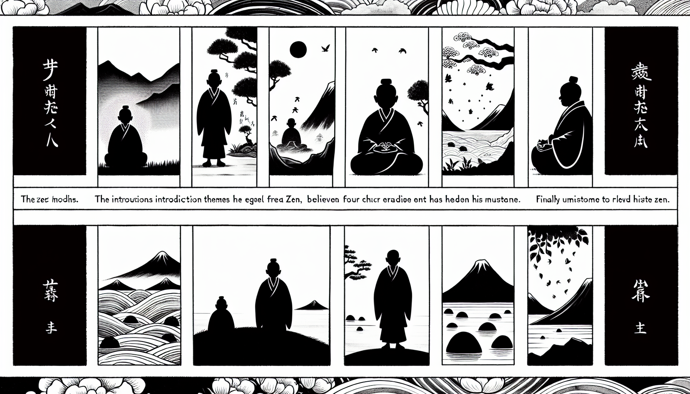

十二巻 巻一覧
正法眼藏第10 四禪比丘
本ページは tools/gen_web_volumes.py が doc/正法眼蔵.txt から冒頭を抜粋して生成しています。図・詳細解説は今後の手編集で拡張できます。
出典（原文）: https://shomonji.or.jp/zazen/doc/genzou.html
この巻の位置づけ（学習メモ）
道元『正法眼蔵』十二巻の第10篇「四禪比丘」です。禅籍・経典への引用や語の行間が重なりやすいので、一度ですべてを要約に還元しない読み方を推奨します。問答 Bot では巻スコープにこの題名を含めると応答が安定しやすいことがあります。
語彙の足場
- 題名語：巻題「四禪比丘」は、道元が本章で特に扱う論点の看板です。辞書義だけに固定せず、本文中の用例で意味を確かめます。
- 引用と典故：公案・経文の引用は、一字一句の照応（何に答えているか）を押さえると全体が見えやすくなります。
- 学び方：冒頭だけでも音読し、分からない箇所は印を付けて後から問うとよいです。
本文（冒頭・自動抜粋）
出典はリポジトリ内 doc/正法眼蔵.txt です。原文の参照元: https://shomonji.or.jp/zazen/doc/genzou.html
第十四祖龍樹祖師言、佛弟子中有一比丘、得第四禪、生増上慢、謂得四果。初得初禪、謂得須陀洹。得第二禪時、謂是斯陀含果、得第三禪時、謂是阿那含果、得第四禪時、謂是阿羅漢。恃是自高、不復求進。命欲盡時、見有四禪中陰相來、便生邪見、謂無涅槃、佛爲欺我。惡邪見故、失四禪中陰、便見阿毘泥梨中陰相、命終卽生阿毘泥梨中（第十四祖龍樹祖師言く、佛弟子の中に一の比丘有りき、第四禪を得て、増上慢を生じ、四果を得たりと謂へり。初め初禪を得ては、須陀洹を得たりと謂へり。第二禪を得し時、是れを斯陀含果と謂ひ、第三禪を得し時、是れを阿那含果と謂ひ、第四禪を得し時、是れを阿羅漢と謂へり。是れを恃んで自ら高ぶり、復た進まんことを求めず。命盡きなんとする時、四禪の中陰の相有りて來るを見て、便ち邪見を生じ、涅槃無し、佛、爲に我を欺くと謂へり。惡邪見の故に、四禪の中陰を失ひ、便ち阿毘泥梨の中陰の相を見、命終して卽ち阿毘泥梨中に生ぜり）。
諸比丘問佛、阿蘭若比丘、命終生何處（諸の比丘、佛に問ひたてまつらく、阿蘭若比丘、命終して何れの處にか生ぜし）。
佛言、是人生阿毘泥梨中（是の人は阿毘泥梨中に生ぜり）。
諸比丘大驚、坐禪持戒便至爾耶（諸の比丘大きに驚き、坐禪持戒して便ち爾るに至るやといふ）。
佛如前答言、彼皆因増上慢。得四禪時、謂得四果。臨命終時、見四禪中陰相、便生邪見、謂無涅槃、我是羅漢、今還復生、佛爲虛誑。是時卽見阿毘泥梨中陰相、命終卽生阿毘泥梨中（佛、前の如く答へて言はく、彼は皆な増上慢に因る。四禪を得し時、四果を得たりと謂へり。臨命終の時、四禪の中陰の相を見て、便ち邪見を生じて謂へらく、涅槃無し、我れは是れ羅漢なり、今還つて復た生ず、佛は虛誑せりと。是の時卽ち阿毘泥梨の中陰の相を見、命終して卽ち阿毘泥梨の中に生ぜり）。
是時佛説偈言（是の時に佛、偈を説いて言はく）、
多聞、持戒、禪（多聞、持戒、禪も）、
未得漏盡法（未だ漏盡の法を得ず）。
雖有此功徳（此の功徳有りと雖も）、
此事難可信（此の事信ずべきこと難し）。
墮獄由謗佛（墮獄は謗佛に由る）、
非關第四禪（第四禪は關るに非ず）。
この比丘を稱じて四禪比丘といふ、または無聞比丘と稱ず。四禪をえたるを四果と僻計せることをいましめ、また謗佛の邪見をいましむ。人天大會みなしれり。如來在世より今日にいたるまで、西天東地ともに是にあらざるを是と執せるをいましむとして、四禪をえて四果とおもふがごとしとあざける。
この比丘の不是、しばらく略して擧するに三種あり。第一には、みづから四禪と四果とを分別するにおよばざる無聞の身ながら、いたづらに師をはなれて、むなしく阿蘭若に獨處す。さいはひにこれ如來在世なり、つねに佛所に詣して、常恆に見佛聞法せば、かくのごとくのあやまりあるべからず。しかあるに、阿蘭若に獨處して佛所に詣せず、つねに見佛聞法せざるによりてかくのごとし。たとひ佛所に詣せずといふとも、諸大阿羅漢の處にいたりて、教訓を請ずべし。いたづらに獨處する、増上慢のあやまりなり。第二には、初禪をえて初果とおもひ、二禪をえて第二果とおもひ、三禪をえて第三果とおもひ、四禪をえて第四果とおもふ、第二のあやまりなり。初二三四禪の相と、初二三四果の相と、比類に及ばず。たとふることあらんや。これ無聞のとがによれり。師につかへず、くらきによれるとがなり。
優婆毱多弟子中有一比丘。信心出家、獲得四禪、謂爲四果。毱多方便令往他處。於路化作群賊、復化作五百賈客。賊劫賈客、殺害狼藉。比丘見生怖、卽便自念、我非羅漢、應是第三果（優婆毱多の弟子の中に、一の比丘有りき。信心もて出家し、四禪を獲得て謂ひて四果と爲り。毱多、方便して他處に往かしむ。路に於て群賊を化作し、復た五百の賈客を化作せり。賊、賈客を劫かし、殺害狼藉す。比丘、見て怖を生じ、卽便ち自ら念へらく、我れは羅漢に非ず、應に是れ第三果なるべしと）。
賈客亡後、有長者女、語比丘言、唯願大徳、與我共去（賈客亡げて後、長者女有り、比丘に語りて言く、唯願はくは大徳、我れと共に去るべし）。
比丘答言、佛不許我與女人行（佛、我が女人と行くことを許したまはず）。
女言、我望大徳而隨其後（我れ大徳を望んで而も其の後に隨はん）。
比丘憐愍相望而行、尊者次復變作大河（比丘、憐愍して相望んで行くに、尊者次に復た大河を變作せり）。
女人言、大徳、可共我渡（大徳、我れと共に渡るべし）。
比丘在下、女在上流（比丘は下に在り、女は上流に在り）。
女便墮水、白言、大徳濟我（女、便ち水に墮し、白して言く、大徳、我れを濟ふべし）。
爾時比丘、手接而出、生細滑想、起愛欲心、卽便自知非阿那含（爾の時に比丘、手接して出し、細滑の想を生じて、愛欲の心を起し、卽便ち自ら阿那含に非ずと知りぬ）。
於此女人極生愛着、將向屏處、欲共交通、方見是師、生大慚愧、低頭而立（此の女人に於て極めて愛着を生じ、將ゐて屏處に向ひて、共に交通せんと欲ふに、方に是れ師なるを見て、大慚愧を生じ、低頭して立ちたり）。
尊者語言、汝昔自謂是阿羅漢、云何欲爲如此惡事（尊者語りて言く、汝、昔自ら是れ阿羅漢なりと謂へり、云何が此の如きの惡事を爲さんと欲るや）。
將至僧中、教其懺悔、爲説法要、得阿羅漢（將ゐて僧中に至り、其れをして懺悔せしめ、爲に法要を説きて、阿羅漢を得しめき）。
この比丘、はじめ生見のあやまりあれど、殺害の狼藉をみるにおそりを生ず。ときにわれ羅漢にあらずとおもふ、なほ第三果なるべしとおもふあやまりあり。のちに細滑の想によりて愛欲心を生ずるに、阿那含にあらずとしる、さらに謗佛のおもひを生ぜず、謗法のおもひなし、聖教にそむくおもひあらず。四禪比丘にはひとしからず。この比丘は、聖教を習學せるちからあるによりて、みづから阿羅漢にあらず、阿那含にあらずとしるなり。いまの無聞のともがらは、阿羅漢はいかなりともしらず、佛はいかなりともしらざるがゆゑに、みづから阿羅漢にあらず、佛にあらずともしらず、みだりにわれは佛なりとのみおもひいふは、おほきなるあやまりなり、ふかきとがあるべし。學者まづすべからく佛はいかなるべしとならふべきなり。
古徳云、習聖教者、薄知次位、縱生逾濫、亦易開解（聖教を習ふ者、薄次位を知るは、縱逾濫を生ずれども、亦た開解し易し）。
まことなるかな、古徳の言。たとひ生見のあやまりありとも、すこしきも佛法を習學せらんともがらは、みづからに欺誑せられじ、他人にも欺誑せられじ。
曾聞、有人自謂成佛。待天不曉、謂爲魔障。曉已不見梵王請説、自知非佛。自謂是阿羅漢。又被他人罵之、心生異念、自知非是阿羅漢。乃謂是第三果也。又見女人起欲想、知非聖人。此亦良由知教相故、乃如是也（曾て聞く、人有りて自ら佛と成ると謂ふ。待つに天曉けず、爲に魔障ならんと謂ふ。曉け已るに梵王の請説を見ず、自ら佛に非ずと知りぬ。自ら是れ阿羅漢なりと謂へり。又他人の之を罵ることを被りて心異念を生ず、自ら是れ阿羅漢に非ずと知りぬ。仍て是れ第三果なりと謂へり。又女人を見て欲想を起す、聖人に非ずと知りぬ。此れ亦た良く教相を知るに由ての故に、乃ち是の如し）。
それ佛法をしれるは、かくのごとくみづからが非を覺知し、はやくそのあやまりをなげすつ。しらざるともがらは、一生むなしく愚蒙のなかにあり。生より生を受くるも、またかくのごとくなるべし。
この優婆毱多の弟子は、四禪をえて四果とおもふといへども、さらに我非羅漢の智あり。無聞比丘も、臨命終のとき、四禪の中陰みゆることあらんに、我非羅漢としらば、謗佛の罪あるべからず。いはんや四禪をえてのちひさし、なんぞ四果にあらざるとかへりみしらざらん。すでに四果にあらずとしらば、なんぞ改めざらん。いたづらに僻計にとどこほり、むなしく邪見にしづめり。
第三には、命終の時おほきなる誤りあり、そのとがふかくしてつひに阿鼻地獄におちぬるなり。たとひなんぢ一生のあひだ、四禪を四果とおもひきたれりとも、臨命終の時、四禪の中陰みゆることあらば、一生の誤りを懺悔して、四果にはあらざりとおもふべし。いかでか佛われを欺誑して、涅槃なきに涅槃ありと施設せさせたまふとおもふべき。これ無聞のとがなり。このつみすでに謗佛なり。これによりて、阿鼻の中陰現じて、命終して阿鼻地獄におちぬ。たとひ四果の聖者なりとも、いかでか如來におよばん。
舍利弗は久しくこれ四果の聖者なり。三千大千世界所有の智惠をあつめて、如來をのぞきたてまつりてほかを一分とし、舍利弗の智惠を十六分にせる一分と、三千大千世界所有の智惠とを格量するに、舍利弗の十六分之一分に及ばざるなり。しかあれども、如來未曾説の法をときましますをききて、前後の佛説ことにして、われを欺誑しましますとおもはず。波旬無此事（波旬に此事無し）とほめたてまつる。如來は福増をわたし、舍利弗は福増をわたさず。四果と佛果と、はるかにことなること、かくのごとし。たとひ舍利弗及びもろもろの弟子のごとくならん、十方界にみちみてたらん、ともに佛智を測量せんことうべからず。孔老にかくのごとくの功徳いまだなし。佛法を習學せんもの、たれか孔老を測度せざらん。孔老を習學するもの、佛法を測量することいまだなし。いま大宋國のともがら、おほく孔老と佛道と一致の道理をたつ。僻見もともふかきものなり。しもにまさに廣説すべし。
四禪比丘、みづからが僻見をまこととして、如來の欺誑しましますと思ふ、ながく佛道を違背したてまつるなり。愚癡のはなはだしき、六師等にひとしかるべし。
古徳云、大師在世、尚有僻計生見之人、況滅後無師、不得禪者（大師在世すら、尚ほ僻計生見の人有り、況んや滅後師無く、禪を得ざる者をや）。
いま大師とは佛世尊なり。まことに世尊在世、出家受具せる、なほ無聞によりては僻計生見の誤りのがれがたし。いはんや如來滅後、後五百歳、邊地下賤の時處、誤りなからんや。四禪を發せるもの、なほかくのごとし。いはんや四禪を發するに及ばず、いたづらに貪名愛利にしづめらんもの、官途世路を貪るともがら、不足言なるべし。いま大宋國に寡聞愚鈍のともがら多し、かれらがいはく、佛法と老子、孔子の法と、一致にして異轍あらず。
大宋嘉泰中、有僧正受。撰進普燈録三十卷云、臣聞孤山智圓之言曰、吾道如鼎也、三教如足也。足一虧而鼎覆焉。臣甞慕其人稽其説。乃知、儒之爲教、其要在誠意。道之爲教、其要在虛心。釋之爲教、其要在見性。誠意也虛心也見性也、異名躰同。究厥攸歸、無適而不與此道會云云（大宋嘉泰中に僧正受といふもの有り。普燈録三十卷を撰進するに云く、臣、孤山智圓の言ふを聞くに曰く、吾が道は鼎の如し、三教は足の如し。足一も虧くれば鼎覆へると。臣、甞て其の人を慕ひ其の説を稽ふ。乃ち知りぬ、儒の教たること、其の要は誠意に在り。道の教たること、其の要は虛心に在り、釋の教たること、其の要は見性に在ることを。誠意と虛心と見性と、名を異にして躰同じ。厥の歸する攸を究むるに、適として此の道と會せずといふこと無し云云）。
かくのごとく僻計生見のともがらのみ多し、ただ智圓、正受のみにはあらず。このともがらは、四禪を得て四果と思はんよりも、その誤りふかし。謗佛、謗法、謗僧なるべし。すでに撥無解脱なり、撥無三世なり、撥無因果なり。莽莽蕩蕩招殃禍、疑ひなし。三寶、四諦、四沙門なしとおもふしともがらにひとし。佛法いまだその要見性にあらず、西天二十八祖、七佛、いづれのところにか佛法のただ見性のみなりとある。六祖壇經に見性の言あり、かの書これ僞書なり、附法藏の書にあらず、曹溪の言句にあらず、佛祖の兒孫またく依用せざる書なり。正受、智圓いまだ佛法の一隅をしらざるによりて、一鼎三足の邪計をなす。
古徳云、老子莊子、尚自未識小乘能著所著、能破所破。況大乘中、若著若破。是故不與佛法少同。然世愚者迷於名相、濫禪者惑於正理、欲將道徳、逍遥之名齊於佛法解脱之説、豈可得乎（老子、莊子は尚ほ自ら未だ小乘の能著所著、能破所破を識らず。況んや大乘の中の若しは著し若しは破するをや。是の故に佛法と少しく同じからず。然れば、世の愚かなる者は名相に迷ひ、濫禪の者は正理に惑ひ、道徳、逍遥の名を將つて佛法解脱の説に齊しめんと欲ふ、豈に得べけんや）。
むかしより名相にまどふもの、正理をしらざるともがら、佛法をもて莊子、老子にひとしむるなり。いささかも佛法の稽古あるともがら、むかしより莊子、老子をおもくする一人なし。
淸淨法行經云、月光菩薩、彼稱顔囘、光淨菩薩、彼稱仲尼、迦葉菩薩、彼稱老子云云（月光菩薩、彼に顔囘と稱ず、光淨菩薩、彼に仲尼と稱ず、迦葉菩薩、彼に老子と稱ず、云云）。
むかしよりこの經の説を擧して、孔子、老子等も菩薩なれば、その説ひそかに佛説に同じかるべしといひ、また佛のつかひならん、その説おのづから佛説ならんといふ。この説みな非なり。
古徳云、準諸目録、皆推此經。以爲疑僞、云云（諸の目録に準じ、皆な此の經を推す。以爲くは疑僞ならん云云）。
いまこの説によらば、いよいよ佛法と孔老とことなるべし。すでにこれ菩薩なり、佛果にひとしかるべからず。また和光應迹の功徳は、ひとり三世諸佛菩薩の法なり。俗人凡夫の所能にあらず、實業の凡夫、いかでか應迹に自在あらん。孔老いまだ應迹の説なし、いはんや孔老は、先因をしらず、當果をとかず。わづかに一世の忠をもて、君につかへ家ををさむる術をむねとせり、さらに後世の説なし。すでにこれ斷見の流類なるべし。莊老をきらふに、小乘なほしらず、いはんや大乘をやといふは上古の明師なり。三教一致といふは智圓、正受なり、後代澆季愚闇の凡夫なり。なんぢなんの勝出あればか、上古の先徳の所説をさみして、みだりに孔老と佛法とひとしかるべしといふ。なんだちが所見、すべて佛法の通塞を論ずるにたらず。負笈して明師に參學すべし、智圓、正受、なんぢら大小兩乘すべていまだしらざるなり。四禪をえて四果とおもふよりもくらし。悲しむべし、澆風のあふぐところ、かくのごとくの魔子おほかることを。
古徳云、如孔丘、姫旦之語、三皇五帝之書、孝以治家、忠以治國、輔國利民、只是一世之内、不濟過未。齊佛法之益於三世、不謬乎（孔丘、姫旦の語、三皇五帝の書の如きは、孝以て家を治め、忠以て國を治め、國を輔し民を利する、只是れ一世の内のみにして、過未に濟らず。佛法の三世を益するに齊しめん、謬らざらんや）。
まことなるかなや、古徳の語。よく佛法の至理に達せり、世俗の道理にあきらかなり。三皇五帝の語、いまだ轉輪聖王の教に及ぶべからず。梵王、帝釋の説にならべ論ずべからず。統領するところ、所得の果報、はるかに劣なるべし。輪王、梵王、帝釋、なほ出家受具の比丘に及ばず。いかにいはんや如來にひとしからんや。孔丘、姫旦の書、また天竺の十八大經に及ぶべからず。四韋陀の典籍にならべがたし。西天婆羅門教、いまだ佛教にひとしからざるなり。なほ小乘聲聞教にひとしからず。あはれむべし。振旦小國邊方にして、三教一致の邪説あり。
第十四祖龍樹菩薩云、大阿羅漢辟支佛知八萬大劫、諸大菩薩及佛知無量劫（大阿羅漢辟支佛は、八萬大劫を知り、諸大菩薩及び佛は無量劫を知りたまふ）。
孔老等、いまだ一世中の前後をしらず、一生二生の宿通あらんや。いかにいはんや一劫をしらんや、いかにいはんや百劫千劫をしらんや、いかにいはんや八萬大劫をしらんや、いかにいはんや無量劫をしらんや。この無量劫をあきらかにてらししれること、たなごころをみるよりもあきらかなる諸佛菩薩を、孔老等に比類せん、愚闇といふにもたらざるなり。耳をおほうて三教一致の言をきくことなかれ。邪説中最邪説なり。
莊子云、貴賤苦樂、是非得失、皆是自然。
この見、すでに西國の自然見の外道の流類なり、貴賤苦樂、是非得失、みなこれ善惡業の感ずるところなり。滿業、引業をしらず、過世、未世をあきらめざるがゆゑに現在にくらし、いかでか佛法にひとしからん。
あるがいはく、諸佛如來ひろく法界を證するゆゑに、微塵法界、みな諸佛如來の所證なり。しかあれば、依正二報ともに如來の所證となりぬるがゆゑに、山河大地、日月星辰、四倒三毒、みな如來の所證なり。山河をみるは如來をみるなり、三毒四倒佛法にあらずといふことなし。微塵をみるは法界をみるにひとし。造次顚沛、みな三菩提なり。これを大解脱といふ。これを單傳直指の祖道となづく。
かくのごとくいふともがら、大宋國に稻麻竹葦のごとく、朝野に遍滿せり。しかあれども、このともがら、たれ人の兒孫といふことあきらかならず、おほよそ佛祖の道をしらざるなり。たとひ諸佛の所證となるとも、山河大地たちまちに凡夫の所見なかるべきにあらず、諸佛の所證となる道理をならはず、きかざるなり。なんぢ微塵をみるは法界をみるにひとしといふ、民の王にひとしといはんがごとし。またなんぞ法界をみて微塵にひとしといはざる。もしこのともがらの所見を佛祖の大道とせば、諸佛出世すべからず、祖師出現すべからず、衆生得道すべからざるなり。たとひ生卽無生と體達すとも、この道理にあらず。
眞諦三藏云、振旦有二福、一無羅刹、二無外道（振旦に二福有り、一には羅刹無し、二には外道無し）。
この言、まことに西國の外道婆羅門の傳來せるなく、得道の外道なしといふとも、外道の見おこすともがらなかるべきにあらず。羅刹はいまだみえず、外道の流類はなきにあらず。小國邊地のゆゑに、中印度のごとくにあらざることは、佛法をわづかに修習すといへども、印度のごとくに證をとれるなし。
古徳云、今時多有還俗之者、畏憚王伇、入外道中。偸佛法義、竊解莊老、遂成混雜、迷惑初心孰正孰邪。是爲發得韋陀法之見也（今時多く還俗する者有り、王伇を畏り憚りて、外道の中に入る。佛法の義を偸み、竊かに莊老を解して、遂に混雜を成し、初心孰れか正、孰れか邪なるを迷惑す。是れ韋陀の法を發得する見と爲る也）。
しるべし、佛法と莊老と、いづれか正、いづれか邪をしらず、混雜するは初心のともがらなり、いまの知圓、正受等これなり。ただ愚昧のはなはだしきのみにあらず、稽古なきいたり、顯然なり、炳焉なり。近日宋朝の僧徒、ひとりとしても、孔老は佛法に及ばずとしれるともがらなし。名を佛祖の兒孫にかれるともがら、稻麻竹葦のごとく、九州の山野にみてりといふとも、孔老のほかに佛法すぐれいでたりと曉了せる一人半人あるべからず。ひとり先師天童古佛のみ、佛法と孔老とひとつにあらずと曉了せり。晝夜に施設せり。經論師、また講者の名あれども、佛法はるかに孔老の邊を勝出せりと曉了せるなし。近代一百年來の講者、おほく參禪學道のともがらの儀をまなび、その解會をぬすまんとす、もともあやまれりといふべし。
孔子書有生知、佛教無生知。佛法有舍利之説、孔老不知舍利之有無（孔子の書に生知有り、佛教には生知無し。佛法には舍利の説有り、孔老は舍利の有無を知らず）。
ひとつにして混雜せんと思ふとも、廣説の通塞、つひに不得ならん。
論語云、生而知之上、學而知之者次、困而學之、又其次也。困而不學、民斯爲下矣（生れながらにして之を知るは上なり、學んで之を知るは次なり、困しんで之を學ぶは又其の次なり。困しみて學ばざるは、民にして斯れを下と爲す矣）。
もし生知あらば無因のとがあり、佛法には無因の説なし。四禪比丘は臨命終の時、たちまちに謗佛の罪に墮す。佛法をもて孔老の教にひとしとおもはん、一生中より謗佛の罪ふかかるべし。學者はやく孔老と佛法と一致なりと邪計する解をなげすつべし。この見たくはへてすてずは、つひに惡趣におつべし。學者あきらかにしるべし、孔老は三世の法をしらず、因果の道理をしらず、一洲の安立をしらず、いはんや四洲の安立をしらんや。六天のことなほしらず、いはんや三界九地の法をしらんや。小千界しらず、中千界しるべからず。三千大千世界をみることあらんや、しることあらんや。振旦一國なほ小臣にして帝位にのぼらず、三千大千世界に王たる如來に比すべからず。如來は梵王、帝釋、轉輪聖王等、晝夜に恭敬侍衞し、恆時に説法を請じたてまつる。孔老かくのごとくの徳なし、ただこれ流轉の凡夫なり。いまだ出離解脱のみちをしらず。いかでか如來のごとく諸法實相を究盡することあらん。もしいまだ究盡せずは、なにによりてか世尊にひとしとせん。孔老内徳なし、外用なし、世尊におよぶべからず、三教一致の邪説をはかんや。孔老、世界の有邊際、無邊際を通達すべからず。廣をしらず、みず、大をしらず、みざるのみにあらず、極微色をみず、刹那量をしるべからず。世尊あきらかに極微色をみ、刹那量をしらせたまふ。いかにしてか孔老にひとしめたてまつらん。孔老、莊子、惠子等は、ただこれ凡夫なり。なほ小乘の須陀洹におよぶべからず。いかにいはんや第二、第三、第四阿羅漢におよばんや。
しかあるを、學者くらきによりて諸佛にひとしむる、迷中深迷なり。孔老は三世をしらず、多劫をしらざるのみにあらず、一念しるべからず、一心しるべからず。なほ日月天に比すべからず、四大王、衆天に及ぶべからざるなり。世尊に比するは、世間出世間に迷惑せるなり。
列傳云、喜爲周大夫善星象。因見異氣、而東迎之、果得老子。請著書五千有言。喜亦自著書九篇。名關令子。準化胡經。老過關西、喜欲從聃求去（列傳云く、喜、周の大夫として星象を善くす。因みに異氣を見て東にゆきて之を迎ふるに、果して老子を得たり。請うて書五千有言を著はさしむ。喜も亦た自ら書九篇を著はす。關令子と名づく。化胡經に準ず。老、關西に過かんとするに、喜、聃に從ひて去くことを求めんと欲ふ）。
聃云、若欲志心求去、當將父母等七人頭來、乃可得去（若し志心去くことを求めんと欲はば、當に父母等の七人の頭を將ち來るべし、乃ち去くことを得べし）。
喜乃從教、七頭皆變豬頭（喜、乃ち教に從ひしに、七頭皆な豬頭に變ぜり）。
古徳云、然俗典孝儒尚尊木像、老聃設化、令喜害親。如來教門大慈爲本、如何老氏逆爲化原（古徳云く、然あるに、俗典の孝儒は尚ほ木像を尊ぶ、老聃は化を設けて喜をして親を害せしむ。如來の教門は大慈を本とす、如何が老氏の逆をもて化原と爲ん）。
むかしは老聃をもて世尊にひとしむる邪儻あり、いまは孔老ともに世尊にひとしといふ愚侶あり、あはれまざらめやは。孔老なほ轉輪聖王の十善をもて世間を化するにおよぶべからず。三皇五帝、いかでか金銀銅鐵諸輪王の七寶、千子具足して、あるいは四天下を化し、あるいは三千界を領ぜるにおよばん。孔子はいまだこれにも比すべからず。過現當來の諸佛諸祖、ともに孝順父母師僧三寶（父母師僧三寶に孝順し）、病人等を供養ずるを化原とせり。害親を化原とせる、いまだむかしよりあらざるところなり。
しかあればすなはち、老聃と佛法とひとつにあらず。父母を殺害するは、かならず順次生業にして泥梨に墮すること必定なり。たとひ老聃みだりに虛無を談ずとも、父母を害せんもの、生報まぬかれざらん。
傳燈録云、二祖毎歎曰、孔老之教、禮術風規、莊易之書、未盡妙理。近聞達磨大士、住止少林。至人不遠、當造玄境（傳燈録云く、二祖毎に歎いて曰く、孔老の教は禮術風規なり、莊易の書は未だ妙理を盡さず。近ごろ聞く、達磨大士少林に住止せり。至人遠からず當に玄境に造るべし）。
いまのともがら、あきらかに信ずべし、佛法の振旦に正傳せることは、ただひとへに二祖の參學力なり。初祖たとひ西來せりとも、二祖をえずは佛法つたはれざらん。二祖もし佛法をつたへずは、東地いまに佛法なからん。おほよそ二祖は餘輩に群すべからず。
傳燈録云、僧神光者、曠達之士也。久居伊洛、博覽群書、善談玄理（傳燈録云く、僧神光といふものあり、曠達の士也。久しく伊洛に居して群書を博覽せり、善く玄理を談ず）。
むかし二祖の群書を博覽すると、いまの人の書卷をみると、はるかにことなるべし。得法傳衣ののちも、むかしわれ孔老之教、禮術風規とおもふしは誤りなりとしめすことばなし。しるべし、二祖すでに孔老は佛法にあらずと通達せり。いまの遠孫、なにとしてか祖父に違背して佛法と一致なりといふや。まさにしるべし、これ邪説なり。二祖の遠孫にあらずは、正受等が説、たれかもちゐん。二祖の兒孫たるべくは、三教一致といふことなかれ。
図解（4コマ・AI生成）
教義の根拠は本文・出典に従い、漫画は比喩の補助に留めてください。

深掘り（読解のコツ）
- 道元文は定義の羅列に見えても、多くの場合誤解への遮断と正伝の姿勢が背骨になっています。
- 「当体」「現成」「即」などの語が出たら、その巻独自の差別相にどう接続しているかをメモしておくとよいです。